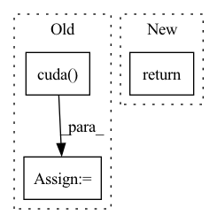

Pattern ID :2264
Before Change
d_neg = torch.einsum("ncm,ck->nkm", dense_q, self.queue_dense.clone().detach())
logits_dense = torch.cat([d_pos, d_neg], dim=1)
logits_dense = logits_dense / self.T
labels_dense = torch.zeros((n, h*w), dtype=torch.long).cuda()
// dequeue and enqueue
self._dequeue_and_enqueue(k, dense_k)
After Change
// dequeue and enqueue
self._dequeue_and_enqueue(k, dense_k)
return [l_pos, l_neg], [d_pos, d_neg]
// return logits, labels, logits_dense, labels_dense
In pattern: SUPERPATTERN
Frequency: 3
Non-data size: 3
Instances Fragment ID: 7913594
Project Name: coincheung/densecl
Commit Name: a87888620e2cf9dab6bb7adcf31033d78b09ad66
Time: 2022-03-19
Author: 867153576@qq.com
File Name: moco/builder.py
M Class Name: MoCo
N Class Name: MoCo
M Method Name: forward(3)
N Method Name: forward(3)
M Parent Class: nn.Module
N Parent Class: nn.Module
M File Name: moco/builder.py
N File Name: moco/builder.py
M Start Line: 168
M End Line: 192
N Start Line: 168
N End Line: 197
Before Change
if self.cuda:
y_true = y_true.cuda()
noobj_mask = noobj_mask.cuda()
box_loss_scale = box_loss_scale.cuda()
//-----------------------------------------------------------//
// reshape_y_true[...,2:3]和reshape_y_true[...,3:4]
// 表示真实框的宽高，二者均在0-1之间
// 真实框越大，比重越小，小框的比重更大。After Change
if n != 0:
print(loss_loc * self.box_ratio, loss_cls * self.cls_ratio, loss_conf * self.balance[l] * self.obj_ratio)
loss += loss_conf * self.balance[l] * self.obj_ratio
return loss
def get_near_points(self, x, y, i, j):
sub_x = x - i Fragment ID: 7913597
Project Name: bubbliiiing/yolov5-pytorch
Commit Name: 27ae9bd10c96138c60752d1da4fa965c0b7372f3
Time: 2022-01-21
Author: 47347516+bubbliiiing@users.noreply.github.com
File Name: nets/yolo_training.py
M Class Name: YOLOLoss
N Class Name: YOLOLoss
M Method Name: forward(4)
N Method Name: forward(4)
M Parent Class: nn.Module
N Parent Class: nn.Module
M File Name: nets/yolo_training.py
N File Name: nets/yolo_training.py
M Start Line: 156
M End Line: 200
N Start Line: 159
N End Line: 201
Before Change
def forward(self, anchor, positive, dist_keypts):
pids = torch.FloatTensor(np.arange(len(anchor)))
if torch.cuda.is_available():
pids = pids.cuda()
// if self.metric == "euclidean":
// distance = torch.sqrt(2 - 2 * torch.matmul(anchor, positive.transpose(0, 1)))
// return batch_hard(distance, pids, margin=self.margin)
dist = cdist(anchor, positive, metric=self.metric)After Change
add_matrix = torch.zeros_like(dist)
add_matrix[np.where(dist_keypts < self.safe_radius)] += 10
dist = dist + add_matrix
return self.calculate_loss(dist, pids)
def calculate_loss(self, dists, pids): Fragment ID: 7913598
Project Name: xuyangbai/d3feat.pytorch
Commit Name: 41b6b76a3d240e1e6d59970c4f243051f37d6233
Time: 2020-05-24
Author: 653823597@qq.com
File Name: utils/loss.py
M Class Name: ContrastiveLoss
N Class Name: ContrastiveLoss
M Method Name: forward(4)
N Method Name: forward(4)
M Parent Class: nn.Module
N Parent Class: nn.Module
M File Name: utils/loss.py
N File Name: utils/loss.py
M Start Line: 66
M End Line: 77
N Start Line: 67
N End Line: 73